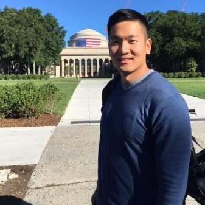

About the Project
In a world where the importance of STEM education is ever increasing, the US still lags behind other developed nations in terms of students entering STEM fields. Within STEM, the ubiquity and advancements in computing techniques, together with the vast amount of data being collected and processed, have driven "data science" into the spotlight, enabling new waves of innovation in almost every industry and discipline. While the supply of data professionals is growing, it can hardly meet the much faster growing demand, let alone overcome the demographic disparities we continue to see. In addition, while more flexible learning modalities are needed, the optimal data science educational mechanism is not clear. To create inclusive pathways for students to data science and STEM, we will leverage rapidly growing interest in sports and sports analytics (including the growing field of electronic sports or esports) to inspire and engage a diverse pool of students while providing pedagogical resources and training to educators.
Project Goals:
- Create a sustainable national network of academics, industry and government partners that will build the platform through which we will develop and ensure the sustainability of our efforts in elevating data science education, particularly in underrepresented populations and minorities.
- Develop, implement, evaluate and disseminate an educational framework based on Case-based Learning, an authentic learning method involving real-world problems and applications. While this agile framework can incorporate different topics, our proposed project will focus on sports.
- Support and generate educational research on different data science education delivery modalities (in-person, virtual, hybrid) for student and instructor subpopulations around the country.
This unique network of academic and industry collaborators will be responsible for the the development, dissemination, and delivery of educational modules. Our scope includes summer institutes and workshops that, building on existing team efforts, will be significantly expanded as well as delivered in hybrid mode (both in-person and virtual), supporting a more geographically diverse population and allowing for educational research on comparison of delivery modalities. To achieve sustainability, we will hold training workshops for educators to replicate and extend these efforts in their own environments.
As one example of providing case-based learning opportunities, SCORE with Data will create a repository of topic-based modules with material at several different levels.
The development of the SCORE with Data network is funded by the National Science Foundation (award 2142705).
Team Roster
 Rebecca Nugent (PI, Pittsburgh Hub)
Rebecca Nugent (PI, Pittsburgh Hub)
Meet the team captain , Rebecca Nugent. As the Stephen E. and Joyce Fienberg Professor of Statistics & Data Science and Head of Carnegie Mellon Statistics & Data Science, she brings a game-changing approach to our field. She's played in the big leagues, contributing to and chairing National Academies of Science, Engineering, and Medicine studies and panels, and has bagged some pretty impressive trophies like the Ryan Award for Meritorious Teaching and the ASA’s Waller Education Award.
 Nicholas Clark (co-PI, New York Hub)
Nicholas Clark (co-PI, New York Hub)
Nick Clark is a powerhouse with a stat-heavy playbook, specializing in military applications and sports analytics (including e-sports). As the former director of West Point’s Center for Data Analysis and Statistics, he's coached and inspired countless students. He's a major player in promoting diversity in education and training, and outside of the academic world, he's a Colonel in the US Army.
 Konstantinos Pelechrinis (co-PI, Pittsburgh Hub)
Konstantinos Pelechrinis (co-PI, Pittsburgh Hub)
Kostas Pelechrinis is our secret weapon. An Associate Professor at the University of Pittsburgh, he's a data and network science wizard with a unique focus on sports analytics. He's invented new ways to gather data, and has developed strategies that could even make a pro coach envious. An advocate for diversity in education, he's trained up-and-coming talent through several renowned programs.
 Michael Schuckers (co-PI, New York Hub)
Michael Schuckers (co-PI, New York Hub)
Schuckers is our analytics all-rounder. A Professor of Sports Analytics and Data Science at UNC Charlotte, he hits home runs in both sports and academia. A recipient of the ASA’s Section on Statistics in Sports Significant Contributor award, he's consulted with major MLB and NHL teams. He's also a prolific author.
 Rodney X. Sturdivant (co-PI, Baylor Hub)
Rodney X. Sturdivant (co-PI, Baylor Hub)
Rodney Sturdivant is our sports stats coach. As Director of the Statistical Consulting Center and Associate Professor at Baylor University, he's developed new training drills and resources for statistical education. He's done some serious research using football, baseball, and hockey data, and has co-authored a highly cited text on logistic regression (>60,000 citations!)
Samantha Nielsen (Pittsburgh Hub)
Take a moment to meet Samantha Nielsen, the powerhouse Associate Director of Academic Programs at Carnegie Mellon Statistics & Data Science, constantly driving forward with innovative plays in the academic field. With a Master's in Human and Community Development and a Bachelor's in Psychology and Family Studies, Sam brings a diverse playbook to our team. From her days as an academic coach to her stints in project management and tech implementation, she's always had her eye on the end zone. Her dynamic leadership and expertise are key to scoring our project's goals.
Peter Freeman (Senior Personnel, Pittsburgh Hub)
Peter Freeman is our playbook strategist. An Associate Teaching Professor at Carnegie Mellon University's Department of Statistics & Data Science and Director of the Undergraduate Program, he's a pro at scoping out and building educational materials. His developed course materials have proven to be a game-changer in statistical learning workshops and summer sports analytics research programs.
 Michael P. B. Gallaugher (Baylor Hub)
Michael P. B. Gallaugher (Baylor Hub)
Mike Gallaugher is our classification and clustering quarterback. An Assistant Professor at Baylor University's Department of Statistical Science, he brings a unique interest in complex data types like higher order data, mixed data, and clickstream data. He's also a board member of The Classification Society, keeping us in line with the best practices.

Andrew Lee (Senior Personnel, New York Hub)
Andrew Lee is our operations research and transportation models linebacker. As the Director of West Point’s Center for Leadership and Diversity in STEM, he's an innovative educator with a unique flair for pedagogy. His expertise extends to military applications, unmanned aerial systems, and disaster relief.
 Robin Lock (Senior Personnel, New York Hub)
Robin Lock (Senior Personnel, New York Hub)
Robin Lock is our stats education learning goal-tender. A distinguished professor at St. Lawrence, he's a seasoned player in the field of stats education. He's a fellow of the ASA and the inaugural winner of the Waller Distinguished Teaching Career Award. He's been instrumental in sharing interesting data and applications for teaching statistics, and his contributions to the field have earned him several major awards.
Brian Macdonald (Yale Hub)
Brian Macdonald is our industry scout. A Senior Lecturer and Research Scientist at Yale University's Department of Statistics & Data Science, he’s previously been on the front lines in the sports industry with ESPN, Florida Panthers Hockey Club, and West Point. He brings real-world sports industry experience and a unique understanding of sports data to the team.
 Joshua Patrick (Baylor Hub)
Joshua Patrick (Baylor Hub)
Joshua Patrick is our data analyst outfielder. A Lecturer at Baylor University's Department of Statistical Science, he brings expertise in spatio-temporal modeling and statistics education to our team. He's developed innovative courses and has worked with the Baylor baseball team, proving that he knows how to hit analytical home runs.
 Ivan Ramler (Senior Personnel, New York Hub)
Ivan Ramler (Senior Personnel, New York Hub)
Ivan Ramler is our e-sports analyst and digital games strategist. As an Associate Professor at St. Lawrence University's Department of Mathematics, Computer Science, and Statistics, he has made waves in the esports research community and won a Best Paper Award for his work on League of Legends. Beyond his remarkable skills on the Rift (having reached Bronze III), he has been instrumental in improving educational experiences for underrepresented and/or economically challenged students.
 Ron Yurko (Senior Personnel, Pittsburgh Hub)
Ron Yurko (Senior Personnel, Pittsburgh Hub)
Say hello to Ron Yurko. He's an Assistant Teaching Professor at Carnegie Mellon's Department of Statistics & Data Science, and a rising star in the field of statistics & data science. His game plan involves developing cutting-edge methods at the crossroads of inference and machine learning. Whether it's statistical genetics or sports analytics, he's always ready to bring his A-game.
 Gordon Weinberg (Pittsburgh Hub)
Gordon Weinberg (Pittsburgh Hub)
Meet Gordon Weinberg, our skilled team trainer. Currently an instructor in the Department of Statistics & Data Science at Carnegie Mellon University, Gordon's been a natural teacher since his elementary school days. He's scored big with recognitions such as the CMU Interfraternity Council and Panhellenic Council Award for his leadership and mentoring skills.
- Brian Macdonald, Yale
- Ivan Ramler, University of St. Lawrence
- Kostas Pelechrinis, University of Pittsburgh
- Rodney Sturdivant, Baylor University
- Robin Lock, University of St. Lawrence
- Ron Yurko, Carnegie Mellon
- Andrew Lee, West Point
- Josh Patrick, Baylor University
- Peter Freeman, Carnegie Mellon
- Rachel Gidaro, West Point
- Eric Gerber, Northwestern University
- Michael Gallaugher, Baylor University
- Scott Nestler, University of Florida
- Scott Powers, Rice University
- John Draper, The Ohio State University
- Ryan Elmore, University of Denver
- Nick Clark, West Point
- Andrew Lee, USMA
- Masoumeh Soleimani Amirshekari, CREC Academy of Aerospace and Engineering
- Eric Gerber, Northeastern University
- Ann Lopez & Alisa Beyer, Chandler-Gilbert Community College
- Sakar Sigdel, Elizabethtown College
- Leah Beck, Collin College
- Michael Lucci, Univ. Pittsburgh at Greensburg
- Lisa Reilly, Bethany College
- Carla Hill, Marist College
- Katherine Merrill, University of Vermont
- William Reynolds, West Point
- James Sherrell, United States Military Academy
- Brittany Oletti, D/Math, USMA
- Alex Withenbury, United States Military Academy
- Katie Fitzgerald, Azusa Pacific University
- Will Best, Belmont University
- Mark Evans, United States Military Academy
- Mike Powell, United States Military Academy
- John Draper, The Ohio State University
- Anna Tucker, D/Math Instructor
- Zachary Binney, Assistant Professor of Quantitative Theory and Methods, Oxford College of Emory University
- Austin Semmel, United States Military Academy
- Ciaran Evans, Wake Forest University
- Rachel Gidaro, United States Military Academy
- Jonathan Day, United States Military Academy
- Brad Hartlaub, Kenyon College
- Peter Freeman, CMU
- Delante E. Moore, United States Military Academy
- Daryl Swartzentruber, Centre College
- Zachary Hass, Purdue University
- Ben Williams, University of Denver
- Nasser Sadeghkhani, North Carolina A&T State University
- Nate Latshaw, N/A
- Brian Macdonald, Yale University
- Monnie McGee, Southern Methodist University
- Aron Laxdal, University of Agder
- Mark Broadie, Columbia Business School
- Sameer Deshpande, University of Wisconsin–Madison
- Nate Fisher, USMA - Instructor
- Brian Franczak, MacEwan University
- Joseph Dorta, USMA
- Adam Loy, Carleton College
- Peter Freeman, Carnegie Mellon University
- Andrew M. Thomas, University of Iowa
- Maria Tsakalakos, Emory University
- Leo Cheng, CMU
- Evan Wu, Elon University
- Priyanka Kaul, Harvard
- Fungai Jani, College of Wooster
- Jonathan Pipping, UF, CMSACamp 2023
- Quinn Robnett, Syracuse University
- Tseegi Nyamdorj, Smith College
- Ethan Park, University of Southern California
- JP, CMSACamp 2023
- Mathew Chandy, University of Connecticut
- Bethany Gonzalez, University of Indianapolis
- Luke Welsh, UW-Madison
- Sara Colando, Carnegie Mellon University
- Katherine Gong, Mount Holyoke College
- Lauren Okamoto, University of California Berkeley
- Kristopher Wilson, North Carolina State University (access via CMSACamp)
- Alma Cooper, Stanford
- Pratham Lakhani, CMU
- Ryan Varghese, CMU
- Benjamin Kriger, N/A (current high school student)
- Anthony Zheng, Carnegie Mellon University
- Thomas Jin, CMU Pre-College Summer Session
- Sarah Weaver, Saint Lawrence University
- Alyssa Bigness, St. Lawrence University
- Hope Donoghue, St. Lawrence University
- Taylor Lum, St. Lawrence University
- Abby Hustler, St. Lawrence
- Kristen Varin, St. Lawrence University
- Ryan Juricic, Belmont University
- Drew Clement, West Point
- Christian Lee, United States Military Academy at West Point
- Ryan Sellew, United States Military Academy
- Gavin Cassidy, St. Lawrence University
- Zhenzhu Nelson, United States Military Academy
- Yanina Shavialenka, Carnegie Mellon University
- Aoran Zhang, Carnegie Mellon University
- Alex Tidd, St. Lawrence University
- Anzhuo Wang, Northeastern University
- Sam Volokh, Rice University
- Maxene Aguinaldo, Northeastern University
- Judy Zhu, Rice University
- Jordyn Detz, United States Military Academy
- Keerthana Komma, Carnegie Mellon University
- Catalina Nelson, United States Military Academy at West Point
- Bennett Marshall, The United States Military Academy
- Will James, USMA
- Prachet Upadrashta, United States Military Academy
- Anthony Tejkl, United States Military Academy
- Junxin (Gin) Zheng, Northeastern University
Philipp Burckhardt (Pittsburgh Hub)
Step into the tech zone with Philipp Burckhardt, Director of E-Learning, Analytics, and Technology at Carnegie Mellon University. At the Department of Statistics & Data Science, he is leading development of the ISLE e-learning platform. Off the field, he is co-developing open-source software for the web, most importantly stdlib, a standard library for JavaScript with a focus on scientific computing and statistics.
 Grant Morgan (Baylor Hub)
Grant Morgan (Baylor Hub)
Let's hear it for our educational maestro, Grant B. Morgan, a renowned Professor and Coordinator of the Quantitative Methods graduate programs at Baylor School of Education. With his expertise in latent variable models, psychometrics, and nonparametric statistics, he's our go-to guy for methodological investigations and advanced quantitative modeling to measure outcomes and success. Grant has an impressive scorecard with over 100 publications. His active contributions to AERA-affiliated organizations are just the icing on the cake.